| 
|
This class is a melee-damage dealer with a medium-sized health pool and a whole new bag of tricks. He tends to play as a solo character with little group interaction.
The nightshroud has a few core strengths as he has the ability to:
- Be invisible, almost always
- Consume Dark to automatically kill, or do massive damage, without losing cards
- Manipulate initiative to an extraordinary extent (which is one of the keys to point 1)
- Jam doors, shielding teammates from all monsters without ranged attacks and/or flying
- Regularly gain 20+ XP per scenario (before scenario bonus XP)
On the flip side, the Nightshroud also faces a few challenges:
- Inflexibility: accomplishing all of the aforementioned lofty goals comes at a cost: one must plan carefully in advance more than any other class, such that every single card played, in the correct order, is a cog in a complex machine. (Ironically, this will result in some of our actions being quite underwhelming in the short-term, as they are intended primarily as setup for a later nova action.) Death incarnate needs to keep to a strict schedule.
- Card count / Loss actions: With a hand of only 9 cards, each one is precious and playing cards as losses will risk early exhaustion. Also, losing cards prematurely is tantamount to needlessly removing cogs from the previously-mentioned complex machine, which can cause serious problems.
- Movement: This one will get a lot better as we level up, buy enhancements, and acquire equipment, but out of the gate at level 1 this character is possibly the slowest in the game.
- Resting: Related to the first point, the Nightshroud can almost never afford to short rest, as removing a cog from the machine at random is extremely risky. During a long-rest will, incidentally, be one of the few times you are at risk of being hit, unless you get help from an item or ally to turn invisible again.
- Traps: For the first several levels, this class has no access to jump movements or push/pull attacks, and can't afford to waste money or body/enhancement slots on a jump item or enhancement. That said, we have a surprisingly large health pool (medium progression) and almost never get hit, so I quickly became our party's resident expert at disarming traps for the group (using my face). For the Nightshroud, hit points (friend and foe) are just a state of mind.
Cards
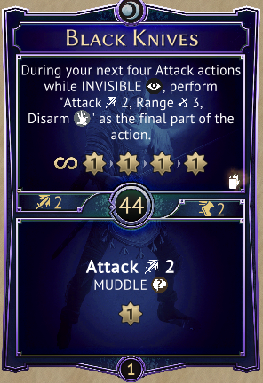
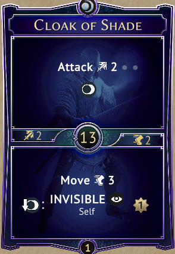
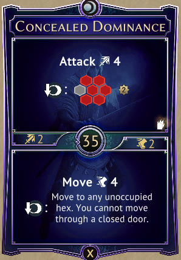
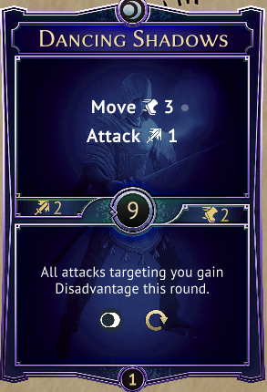
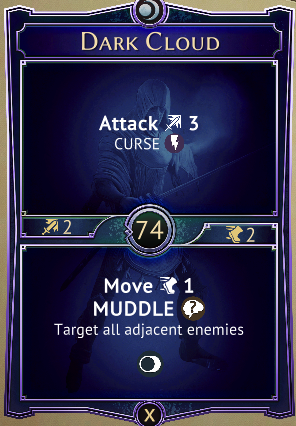
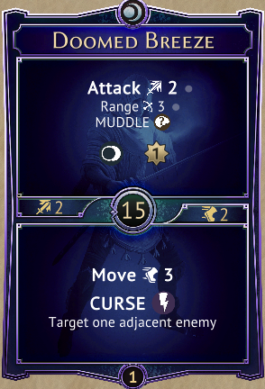
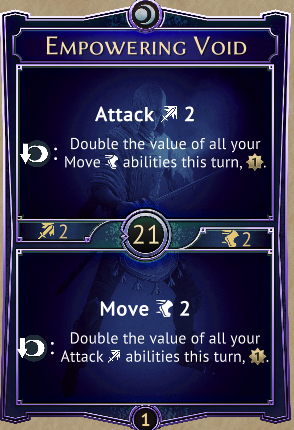
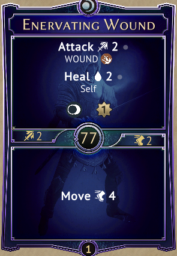
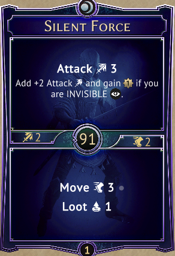
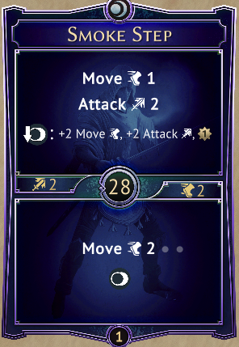
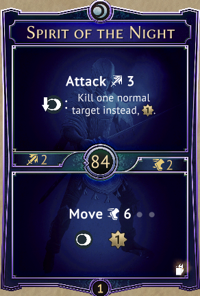
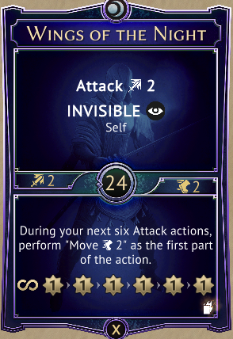
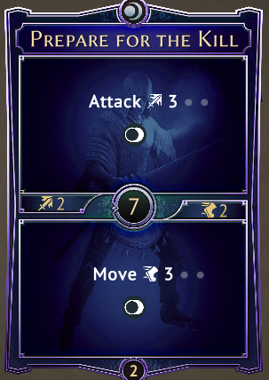
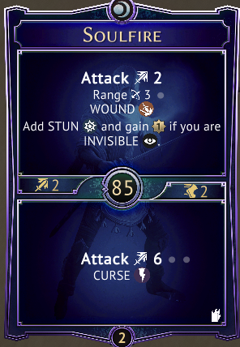
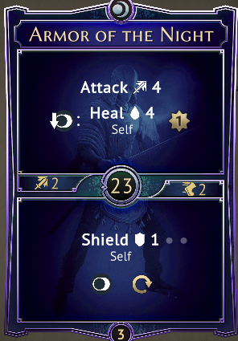
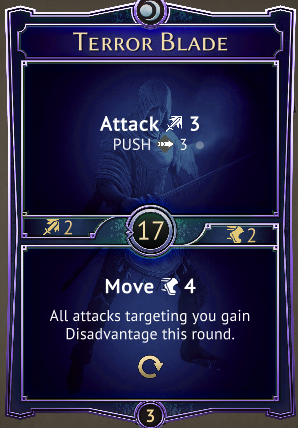
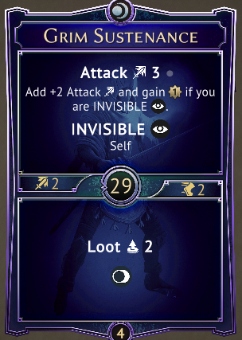
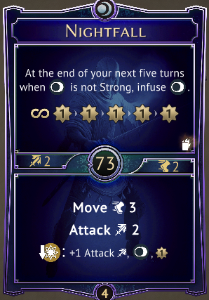
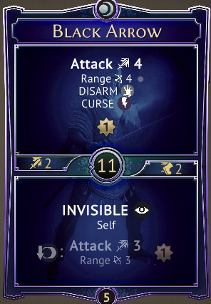
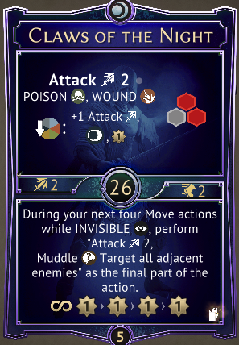
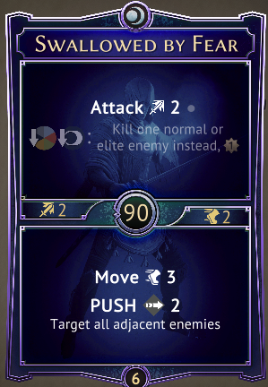
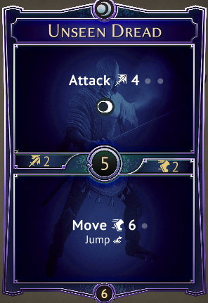
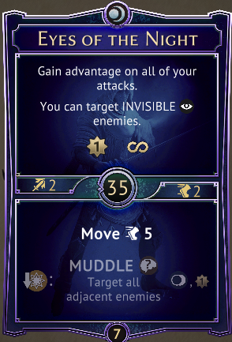
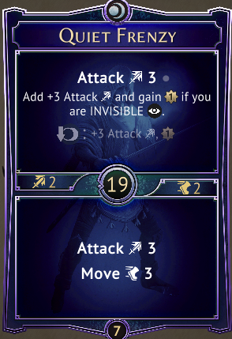
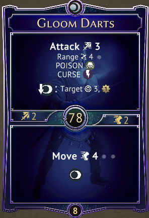
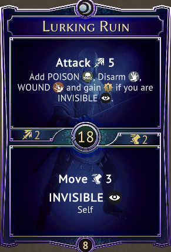
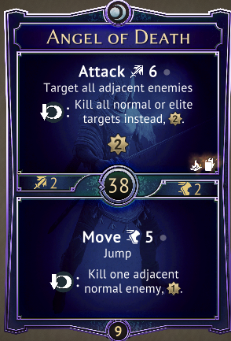
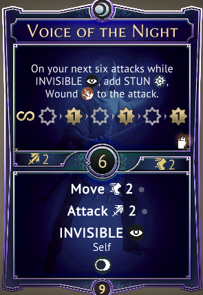